場所が変わって切れたテクスチャを探して直す
テクスチャのフォルダーを移すと、3D ビューではピンク色になります。「欠損参照を解決」は、検索ルートの中から同じファイルを点数を付けて探し、確かな物だけをつなぎ直します。
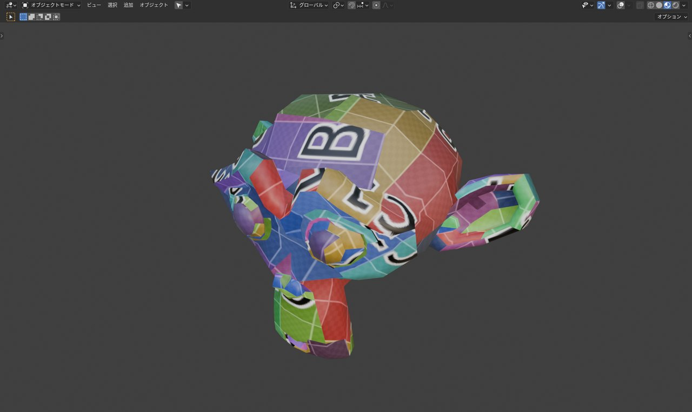
SmartTools アドオン解説書
版 1.0.0 ／ 2026年11月18日 ／ Blender 5.1.2 用
SmartFile Suite は、Blender のファイルまわりの作業をまとめて扱うアドオンです。ほかの .blend ファイルからデータを取り込む、リンク（別のファイルを参照する読み込み方）を調べてつなぎ直す、外部ファイルを集めて書き出す、作業の前に復元ポイント（あとで戻れる保存）を作る、といった作業を 1 つのパネルから始められます。パネルは見出しごとに折りたためます。上から「常時機能切り替え」「現在のソース」「クイックソース」と並び、その下に 7 つのカテゴリ「リンク」「アペンド」「インポート」「エクスポート」「プレビュー」「履歴と復元」「その他」が続きます。見出しの右にある「？」ボタンの使い方は、全体仕様書の「？ヘルプ」の章を見てください。

3DビューポートでNキーを押し、「Smart File」タブを選びます。どのモードでも「現在のソース」を開いて作業対象を確認できます。
入口全体の図は「現在のソース」だけが開いた状態で、下に「クイックソース」と各カテゴリが続きます。
取り込み元の.blendと、取り込み先のシーンを用意します。取り込みたいデータを選ぶのは、元の.blendをファイル選択画面で開いた後です。
取り込んだデータが現在のファイルにあるか確認します。オブジェクトを選んだ場合はアウトライナーで名前を探せます。
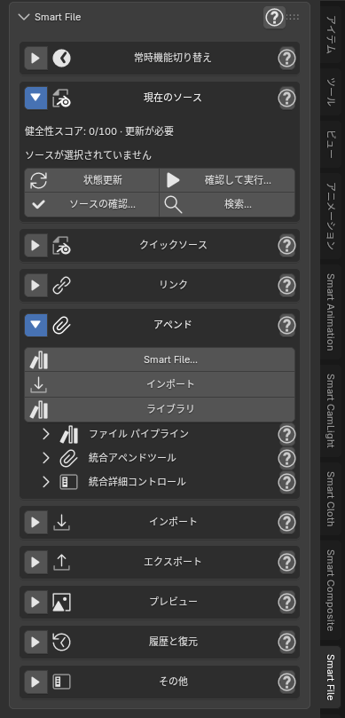
作業前に復元ポイントを作り、上半分を消したモデルを保存時の形に戻します。削除後と復元後を同じ視点で比較できます。
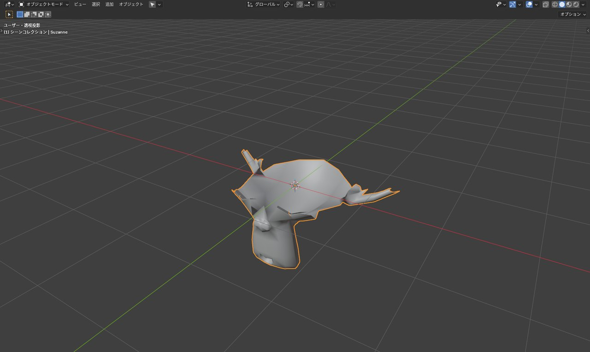
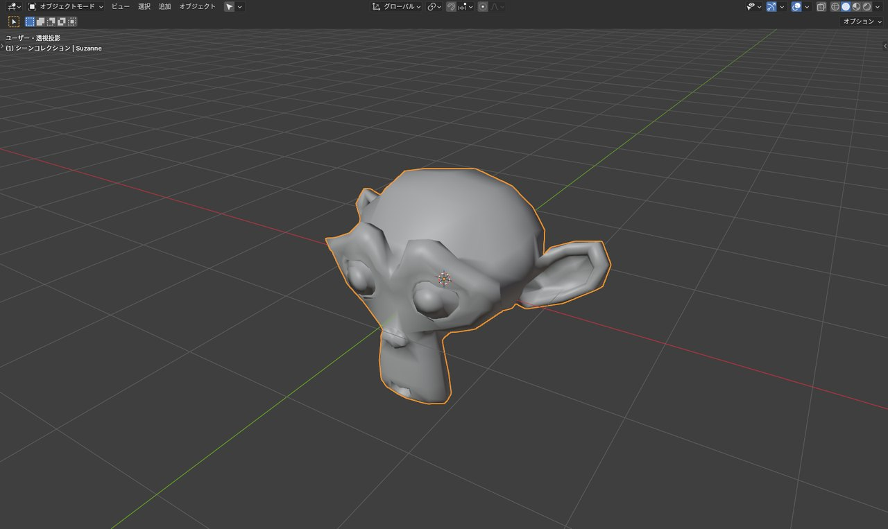
試す前に 新規シーンかコピーで試し、復元先を選んでから実行する。
この作例の手順を見る作例を画像で保存 (PNG)導入・トラブルのヘルプ
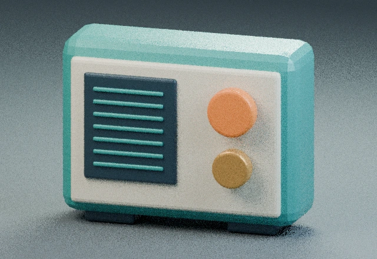
コピーしたファイルで試します。未使用のメッシュと材質を4個ずつ作り、未使用データの削除を実行します。
未使用8個 → 0個
この作例のシーンにある19個のオブジェクトと、それらが使うデータは維持されました。
テクスチャのフォルダーを移すと、3D ビューではピンク色になります。「欠損参照を解決」は、検索ルートの中から同じファイルを点数を付けて探し、確かな物だけをつなぎ直します。

「レポーター: 詳細コントロール」の画面では、カスタムプロパティの値などを条件にして物を選べます。「隔離表示」は、条件に合わない物を隠して、合う物だけを選びます。
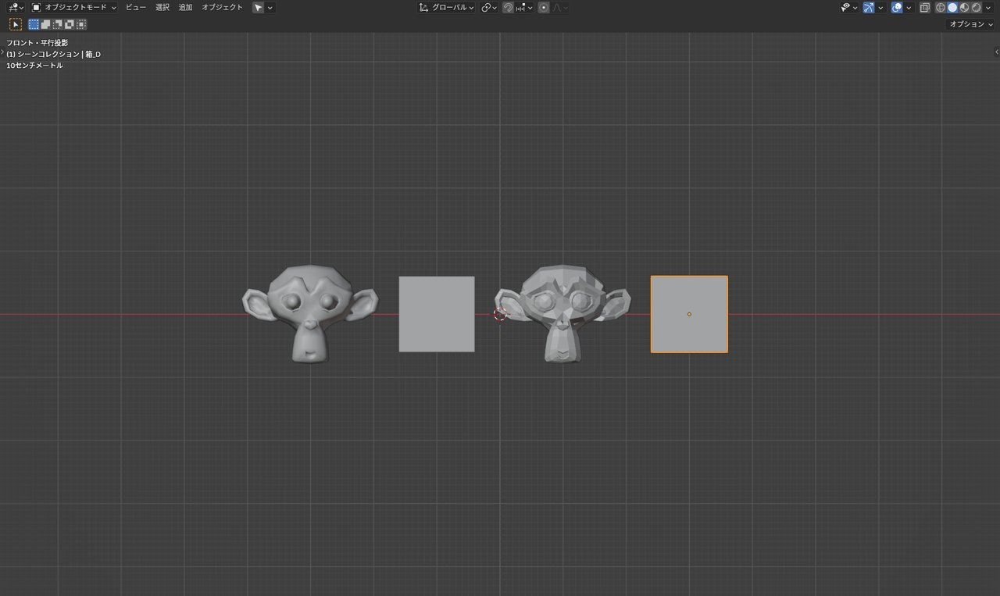
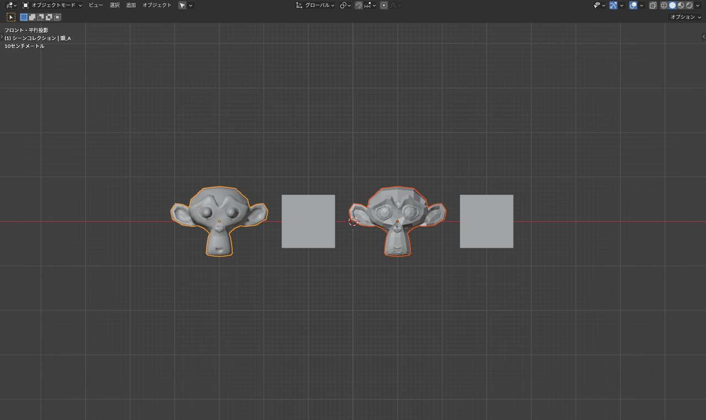
ファイルの取り込み・リンクの点検・書き出し・確認・履歴と復元を、サイドバーの 1 つのパネルにまとめた道具です。
このアドオンを使うと、画面は次のように変わります。くわしい操作は 5 章の各機能の「実例」で説明します。
実例3D ビューの物の上に名前を出す（スザンヌで試した様子）
「ビューポートラベル」を有効にすると、選んでいる物の名前などが 3D ビューの中に文字で出ます。たくさんの物が並ぶ場面で、どれが何かを確かめるのに使います。
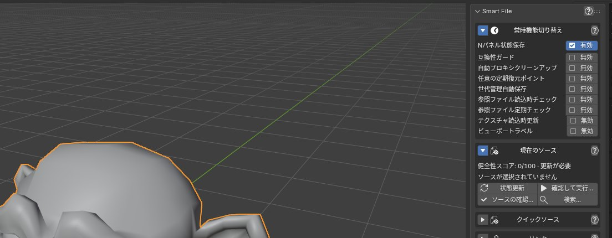
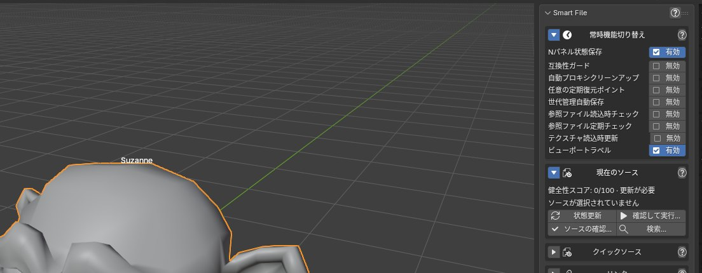
見どころ：頭の上に「Suzanne」という文字が出て、右の行の表示が「有効」に変わります。既定では、選択中でカスタムプロパティを持つ物にだけ出ます。この例の物にはカスタムプロパティを 1 つ付けてあります。何も付いていない物には、既定のままでは出ません。
実例場所が変わって切れたテクスチャを探して直す（スザンヌで試した様子）
テクスチャのフォルダーを移すと、3D ビューではピンク色になります。「欠損参照を解決」は、検索ルートの中から同じファイルを点数を付けて探し、確かな物だけをつなぎ直します。
見どころ：前はファイルが見つからないのでピンク色です。後はマス目のテクスチャが元どおり写ります。「変更を適用」が切れている時は、案を保存するだけでパスは変わりません。
このアドオンならではの機能を、図に番号を付けて説明します。図の中の番号と、図の下の一覧の番号が対応しています。図を押すと大きく表示されます。設定の一つ一つは 5 章の各見出しで説明します。
テクスチャなどのフォルダーを移すと、Blender では見つからないファイルを使う物がピンク色になり、1 つずつ探し直すことになります。「ファイル パイプライン」の画面は、ファイルが使う外部のファイルを点検し、見つからない物や絶対パスの数と点数を 1 画面に出します。「欠損参照を解決」は、検索ルートの中から同じファイルを点数付きで探し、確かな物だけをつなぎ直します。
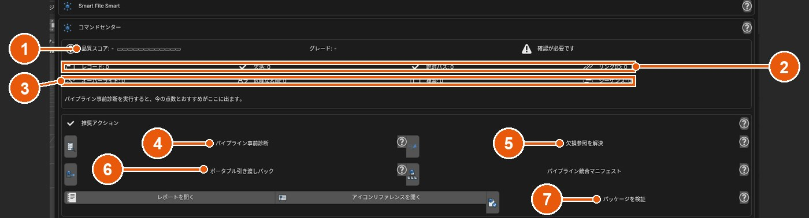
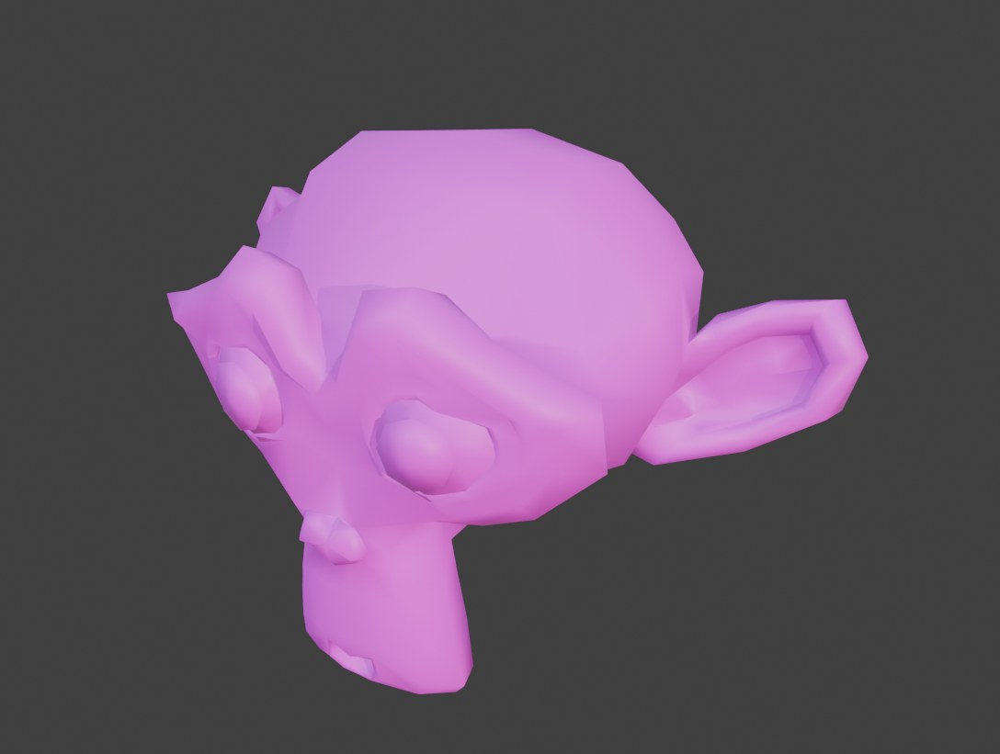
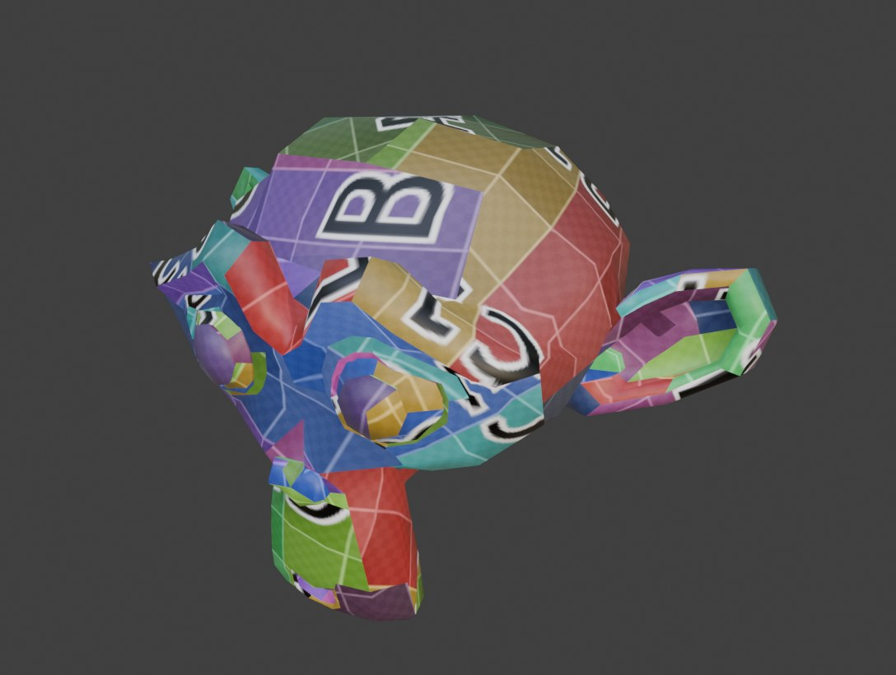
パスを書き換える機能は、どれも「変更を適用」が入っている時だけファイルの中を変えます。最初は切れていて、その間は案と結果をレポートに出すだけです。案を確かめてから入れて押すので、思わぬ書き換えを防げます。下の 2 枚は、同じ「再パス指定を適用」を、切ったまま押した時と、入れて押した時の比べです。
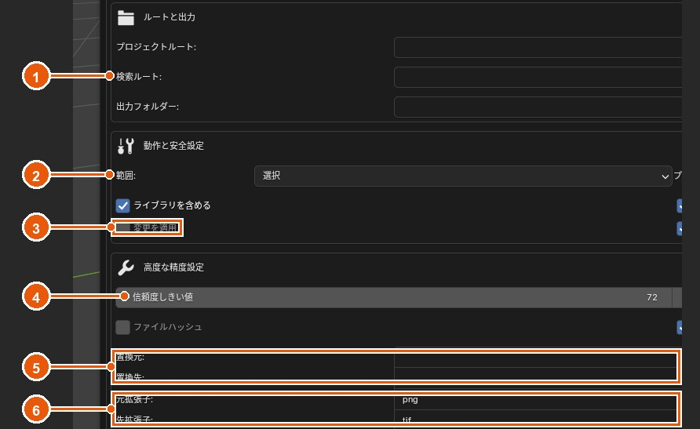
くわしい設定：5-7. ファイル パイプラインの画面：設定
大きな変更の前に「手動復元ポイントを作成」を押しておくと、失敗しても「履歴ブラウザー」からその時の状態へ戻せます。ほかの Blender が落ちた時は、「クラッシュ復旧」がその状態を新しいファイルとして取り出し、確認のあとで開きます。落ちた Blender や元のファイルは変えません。
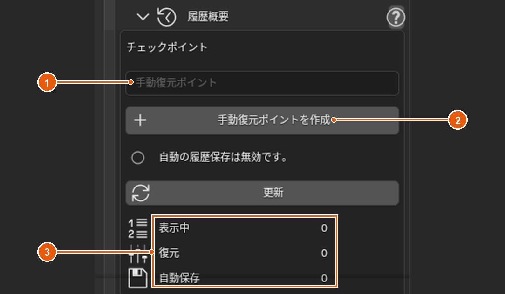
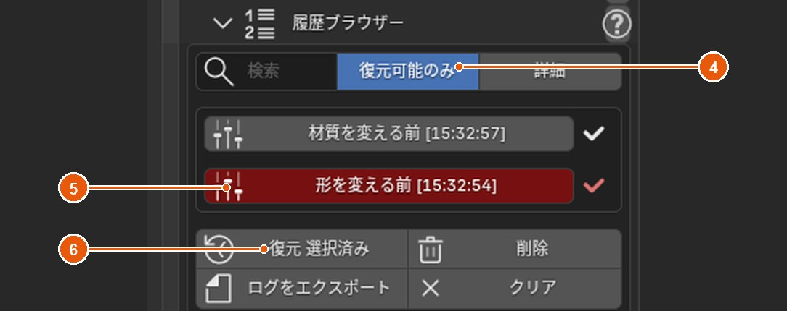
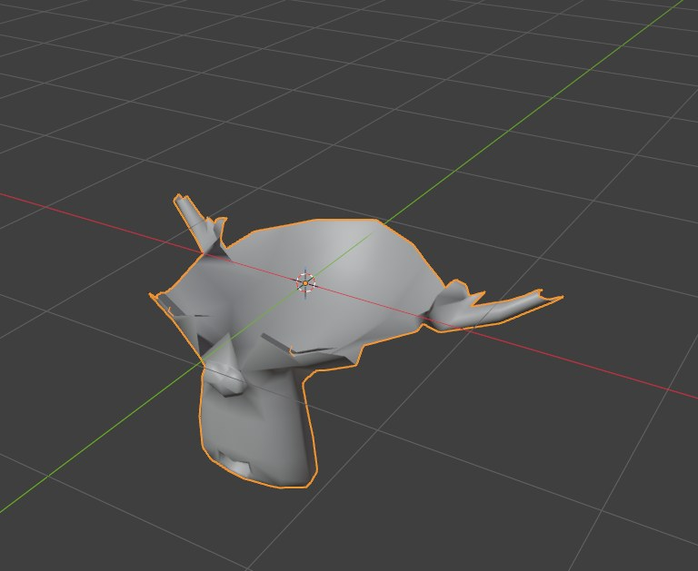

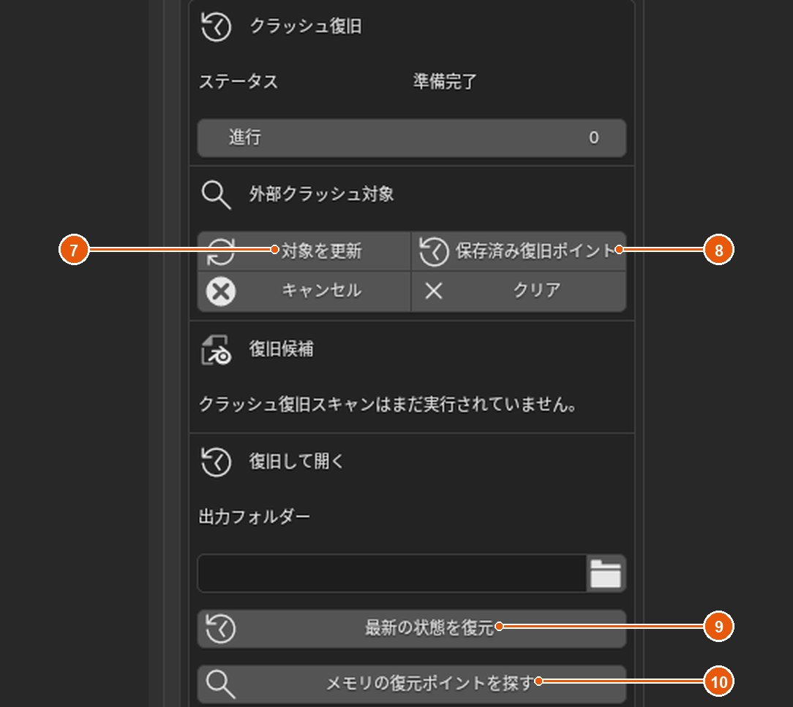
アドオンの入れ方・画面を日本語にする方法・N パネルと「？」ヘルプの共通の使い方は、「SmartTools 全体仕様書」にまとめています。先にそちらの 2〜5 章を読んでください。
| 入れる ZIP | SmartFileSuite_1.0.0.zip |
|---|---|
| Blender の画面での名前 | Smart File |
| 動く Blender | 5.1.2 |
3D ビューのサイドバー（N パネル）の「Smart File」タブにあります。パネルの見出しは「Smart File」です。同じ内容のパネルは、画像エディター・ノードエディター・ドープシート・グラフエディター・NLA・ビデオシーケンサー・ムービークリップエディター・ファイルブラウザー・スプレッドシート・テキストエディターのサイドバーにも出ます。Smart Tools Manager でエディターごとの表示を決めている場合は、その設定に従います。
| 出る画面 | 3D ビューポート、画像エディター（UV エディター）、ノードエディター、ドープシート、グラフエディター、NLA エディター、ビデオシーケンサー、動画クリップエディター、ファイルブラウザー、スプレッドシート、テキストエディター |
|---|---|
| タブ | Smart File |
| モード | どのモードでも表示されます。「Undo負荷診断」の計測だけは、オブジェクトモードで使います。 |
画面の上から順に、見出しごとに説明します。見出しの右の「？」を押すと、同じ内容の説明が画面にも出ます。青い枠の「実例」は、スザンヌなどの簡単なモデルで実際に操作し、3D ビューでの変化を前と後で並べたものです。
ボタンを押さなくても裏で動き続ける機能を、まとめて入り・切りする場所です。最初は閉じています。
場所パネルのいちばん上の見出しです。
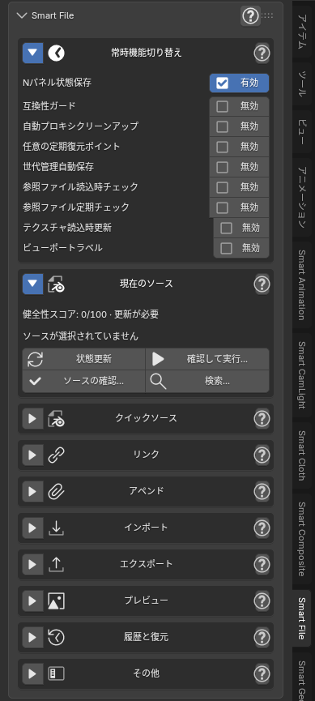
| 表示 | 働き |
|---|---|
| Nパネル状態保存 | 有効にすると、SmartFile Suite のパネルの設定を変えるたびに保存し、Blender を起動し直しても元に戻します。最初から有効です。 |
| 互換性ガード | ほかの Smart 系アドオンとの組み合わせで起きることが分かっている不具合（起動時・オペレーターが見つからない時など）を防ぎます。 |
| 自動プロキシクリーンアップ | ファイルを開く・保存する時と一定の間隔で、SmartFile Suite が使う代理（プロキシ）の情報が壊れていないかを確かめて片付けます。切ると、そのための見張りを止めます。 |
| 任意の定期復元ポイント | 決まった間隔で復元ポイントを作るのを許可します。戻り先は、手動の復元ポイントを作るのが基本です。 |
| 世代管理自動保存 | 自動でバックアップを保存します。切ると、自動保存の処理を止めます。 |
| 参照ファイル読込時チェック | ファイルを開いたときに、リンクしたライブラリを確かめます。 |
| 参照ファイル定期チェック | Blender を開いている間、リンクの状態を一定の間隔で確かめます。 |
| テクスチャ読込時更新 | ファイルを開いたあとに、テクスチャのパス（置き場所）を管理する機能の情報を更新します。 |
| ビューポートラベル | 3D ビューの上に、オブジェクトの名前などのラベルを描きます。既定では、選択中でカスタムプロパティを持つオブジェクトにだけ出ます。変えるには、「プレビュー」の「統合詳細コントロール」にある「レポーター: 詳細コントロール」を押して画面を開き、「オブジェクトレポーター」にある「選択中のみ」「タグ付きのみ」を切り替えます。 設定の保存を有効にしている場合、アドオンの再有効化や Blender の再起動後も、保存したラベルの有効状態が戻ります。 |
実例3D ビューの物の上に名前を出す（スザンヌで試した様子）
「ビューポートラベル」を有効にすると、選んでいる物の名前などが 3D ビューの中に文字で出ます。たくさんの物が並ぶ場面で、どれが何かを確かめるのに使います。
見どころ：頭の上に「Suzanne」という文字が出て、右の行の表示が「有効」に変わります。既定では、選択中でカスタムプロパティを持つ物にだけ出ます。この例の物にはカスタムプロパティを 1 つ付けてあります。何も付いていない物には、既定のままでは出ません。
いま選んでいるソース（取り込み元の .blend ファイル）と、その状態を示します。最初から開いています。
場所「常時機能切り替え」のすぐ下です。
| 表示 | 働き |
|---|---|
| 健全性スコア | ソースの準備ができているかを 0〜100 の点数で示します。 |
| ソースが選択されていません | まだソースを選んでいないときに出ます。選ぶと、ここにファイル名と置き場所が出ます。 |
| 次 | 次にやるとよい作業の提案があるときだけ出ます。 |
| 状態更新 | 点数や提案などの表示を最新にします。 |
| 確認して実行... | いちばん優先度の高い提案を、確認の画面を出してから実行します。 |
| ソースの確認... | ソースの置き場所や、公開の準備ができているか、よくある設定の問題などを調べます。 |
| 検索... | SmartFile Suite の機能を探して呼び出せる画面を開きます。 |
よく使うソースへすぐ切り替えるための見出しです。最初は閉じています。
場所「現在のソース」の下です。
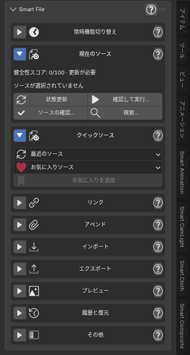
| 表示 | 働き |
|---|---|
| 最近のソース | 最近使ったソースの一覧を出し、選ぶとそのソースに切り替わります。 |
| お気に入りソース | お気に入りに入れたソースの一覧を出します。 |
| お気に入りを追加 | いま選んでいるソースをお気に入りに入れます。ソースを選んでいないときは押せません。 |
リンクしたライブラリを調べたり、つなぎ直したりする機能のカテゴリです。開くと、ボタンが並び、その下に折りたたみの見出しが続きます。
場所7 つのカテゴリのいちばん上です。
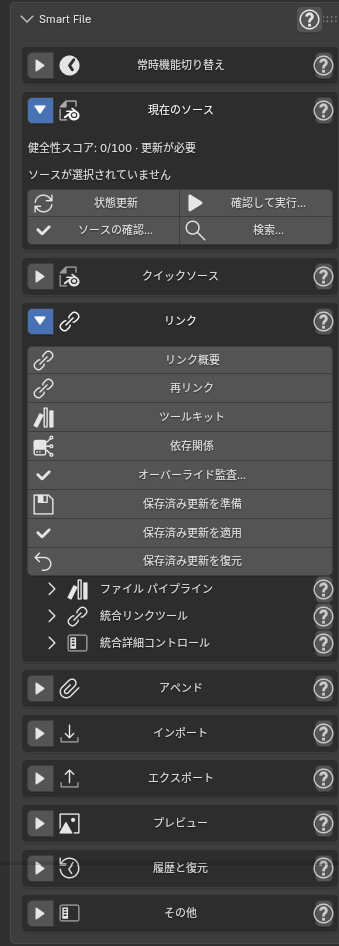
| 表示 | 働き |
|---|---|
| リンク概要 | つなぎ直し・公開・受け渡しの前に、リンクのつながりを確かめます。 |
| 再リンク | リンクしたライブラリ、見つからないパス、つなぎ直しの候補、オーバーライドの問題を調べる画面を開きます。 |
| ツールキット | リンクの修復向けの道具をまとめた画面を開きます。 |
| 依存関係 | このファイルが頼っている外部ファイルを、まとめる・つなぎ直す・公開する前に確かめる画面を開きます。 |
| オーバーライド監査... | ライブラリオーバーライド（リンクしたデータを一部だけ編集できるようにする仕組み）に問題がないかを点検します。 |
| 保存済み更新を準備 | 保存されているライブラリの参照を新しいものへ切り替える計画を作ります。 |
| 保存済み更新を適用 | 作った計画を適用します。 |
| 保存済み更新を復元 | 計画を適用する前の状態へ戻します。 |
| 親シーンへ戻る | リンク先のファイルを開いて編集していたときだけ出ます。元のファイルへ戻ります。 |
「リンク」「アペンド」「インポート」「エクスポート」「プレビュー」「その他」の各カテゴリの中に出る折りたたみの見出しです。参照の一覧、パスの付け替え、ファイルの収集、差分の比較などをまとめた機能群で、カテゴリごとに並ぶボタンが変わります。
場所各カテゴリのボタンの下にある、折りたたみの見出しです。最初は閉じています。「履歴と復元」には出ません。
| 表示 | 働き |
|---|---|
| ファイル パイプライン | 「ファイル パイプライン」の画面を開きます。点検の結果、検索ルートや「変更を適用」などの設定、機能のボタンが並びます。データを書き換える機能のボタンの多くは、画面の「詳細を表示」を入れた時に出ます。 |
| パイプライン事前診断 | 「リンク」の中にあります。今のシーンを調べ、優先順位を付けた修復の案を作ります。 |
| 欠損参照を解決 | 「リンク」の中にあります。見つからないファイルを検索ルートから点数付きで探し、案を保存します。「変更を適用」が入っている時は、確かな物だけをつなぎ直します。 |
| 参照インベントリ | 「リンク」の中にあります。ファイルが参照しているものを一覧にします。 |
| 再パス指定をプレビュー | 「リンク」の中にあります。パスの付け替えの案を作り、実行する前に確かめます。パスはまだ変わりません。付け替え元と先は、「ファイル パイプライン」の画面の「置換元」「置換先」に入れます（「詳細を表示」を入れると出ます）。入れていない時は、検索ルートから見つからないファイルを探した案になります。 |
| 再パス指定を適用 | 「リンク」の中にあります。「変更を適用」が入っている時、パスの付け替えの案を実行し、パスを実際に書き換えます。切れている時は何も変えず、案をレポートに出します。 |
| ライブラリを再読み込み | 「リンク」の中にあります。リンク元の .blend をディスクから読み直し、リンク元の変更を今のファイルへ反映します。 |
| 依存関係グラフ | 「リンク」の中にあります。ファイルどうしのつながりを示します。 |
| リンクを実体化 | 「アペンド」の中にあります。リンクしたデータを、このファイルの中の編集できるデータに変えます。対象は「ファイル パイプライン」の画面の「範囲」で決めます。最初は選択中の物です。「変更を適用」が切れていても、押すと変わります。 |
| ライブラリオーバーライドを作成 | 「アペンド」の中にあります。選んだリンクデータにオーバーライドを作ります。元のファイルとのつながりを保ったまま、今のファイルの中で動かせるようになります。「変更を適用」が切れていても、押すと変わります。 |
| 選択階層を書き出し | 「アペンド」の中にあります。選んだ階層をライブラリ用に書き出します。 |
| アセットカタログを構築 | 「インポート」の中にあります。アセットの一覧（カタログ）を作ります。 |
| バージョン更新計画 | 「インポート」の中にあります。新しい版への切り替え計画を作ります。 |
| エンジン用プレハブマニフェスト | 「インポート」の中にあります。ゲームエンジンへ渡すための一覧ファイルを作ります。 |
| パッケージを収集 | 「エクスポート」の中にあります。必要なファイルを 1 つのフォルダーに写して集めます。「変更を適用」が入っている時は、このファイルの中のパスも、集めた先へ書き換えます。 |
| USDレイヤーマニフェスト | 「エクスポート」の中にあります。USD 用の一覧ファイルを書き出します。 |
| 公開コンテナマニフェスト | 「エクスポート」の中にあります。公開するコンテナの一覧ファイルを書き出します。「ショットマニフェスト」もここにあります。 |
| キャッシュレポート | 「プレビュー」の中にあります。キャッシュファイルの状態をまとめます。 |
| 差分を比較 | 「プレビュー」の中にあります。保存した状態との違いを比べます。 |
| 命名整理レポート | 「プレビュー」の中にあります。名前の付け方の問題をまとめます。 |
| プロジェクト品質を監査 | 「プレビュー」の中にあります。プロジェクト全体を点検します。 |
| テクスチャ拡張子を置換 | 「その他」の中にあります。テクスチャの拡張子の置き換えを確かめます。置き換え先のファイルがあり、「変更を適用」が入っている時だけパスを変えます。どの拡張子からどの拡張子へ変えるかは、「ファイル パイプライン」の画面の「元拡張子」「先拡張子」に入れます（「詳細を表示」を入れると出ます）。 |
| カメラキュー | 「その他」の中にあります。カメラごとの作業の順番を扱います。 |
| パスを相対化 | 「その他」の中にあります。ファイルが保存済みで「変更を適用」が入っている時、外部のファイルのパスを .blend の場所から見た書き方（相対パス）に変えます。切れている時は何も変えず、対象をレポートに出します。 |
実例リンクしたオブジェクトを、このファイルのデータにする（スザンヌで試した様子）
「リンクを実体化」は、別の .blend からリンクしたオブジェクトを、このファイルの中の編集できるデータに変えます。
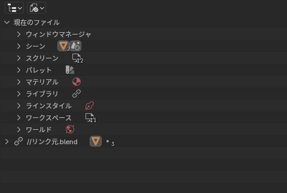

見どころ：アウトライナーの「Blender ファイル」の表示を見ます。前は「現在のファイル」に「オブジェクト」の項目が無く、オブジェクトはリンク元のファイルの側にあります。後は「現在のファイル」に「オブジェクト」が加わり、リンク元の側からはオブジェクトの印が消えています。
実例リンク元の変更を、開いたままのファイルへ取り込む（リンクしたスザンヌで試した様子）
「ライブラリを再読み込み」は、リンク元の .blend をディスクから読み直します。ほかの人がリンク元を直した時に、ファイルを開き直さずに最新の形へ変えられます。
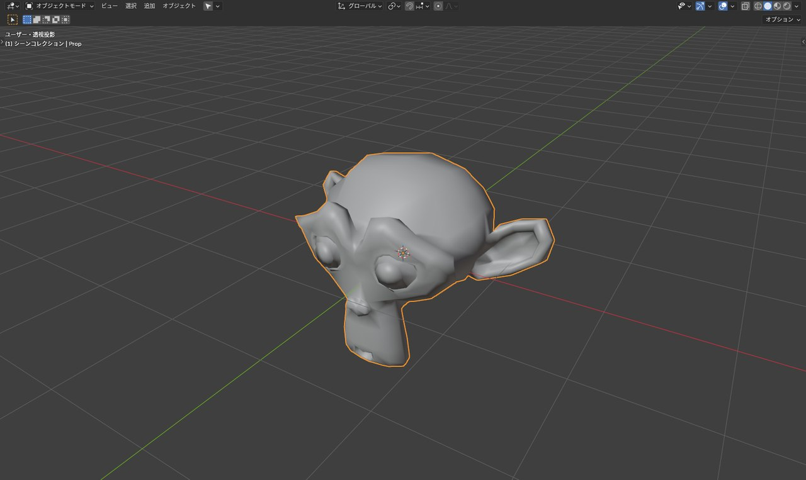
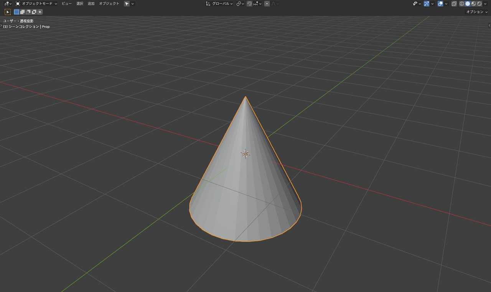
見どころ：前はリンク元のスザンヌの形です。リンク元のファイルの中の同じ名前の物が円すいに変わった後で押すと、3D ビューの形も円すいになります。今のファイルでは何も編集していません。
実例リンクしたままの物を動かせるようにする（リンクしたスザンヌで試した様子）
リンクした物は、そのままでは位置を変えられません。「ライブラリオーバーライドを作成」を押すと、元のファイルとのつながりを保ったまま、今のファイルの中で動かせるようになります。
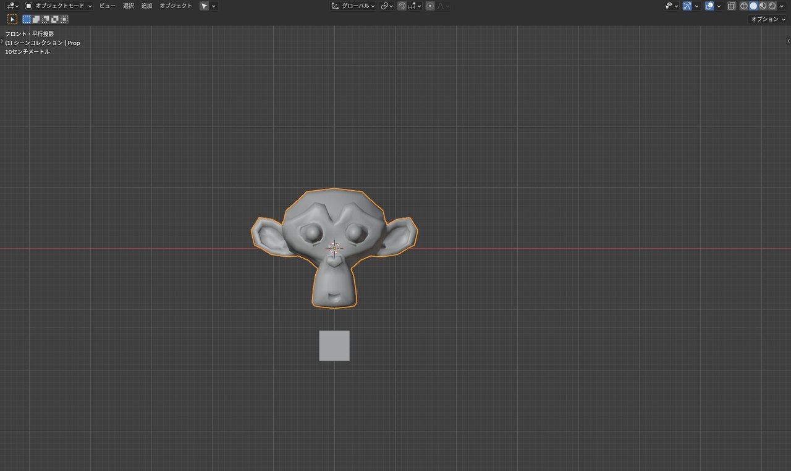
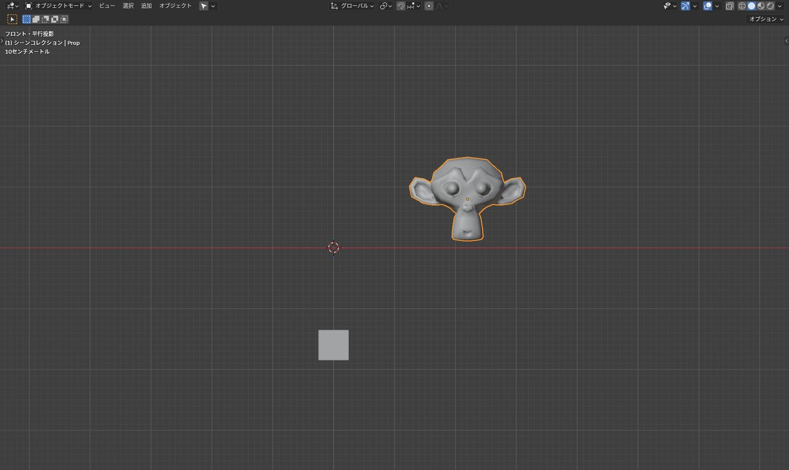
見どころ：下の小さな立方体は位置の目印です。前はスザンヌがその真上にあり、動かせません。後はオーバーライドになったので、右上へ動かして大きさも変えられています。
実例場所が変わって切れたテクスチャを探して直す（スザンヌで試した様子）
テクスチャのフォルダーを移すと、3D ビューではピンク色になります。「欠損参照を解決」は、検索ルートの中から同じファイルを点数を付けて探し、確かな物だけをつなぎ直します。
見どころ：前はファイルが見つからないのでピンク色です。後はマス目のテクスチャが元どおり写ります。「変更を適用」が切れている時は、案を保存するだけでパスは変わりません。
実例「変更を適用」を入れた時だけ、パスを書き換える（スザンヌで試した様子）
フォルダーの場所が変わった時は、「再パス指定を適用」でパスの前の部分をまとめて付け替えられます。「変更を適用」が切れている間は何も変えず、案だけをレポートに出すので、確かめてから書き換えられます。
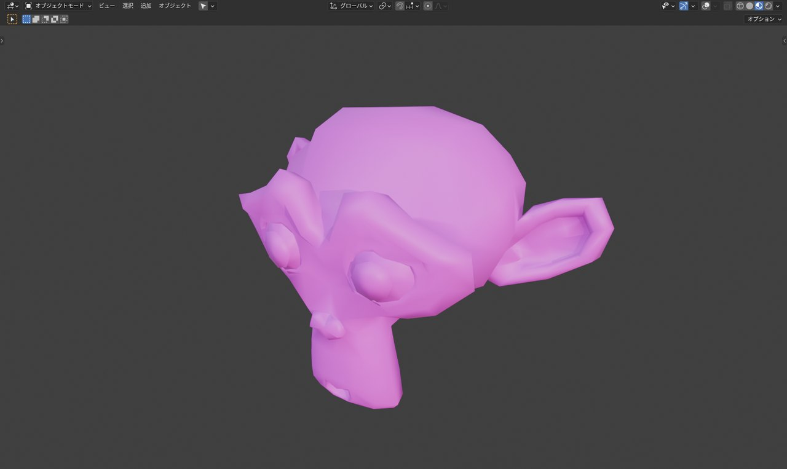
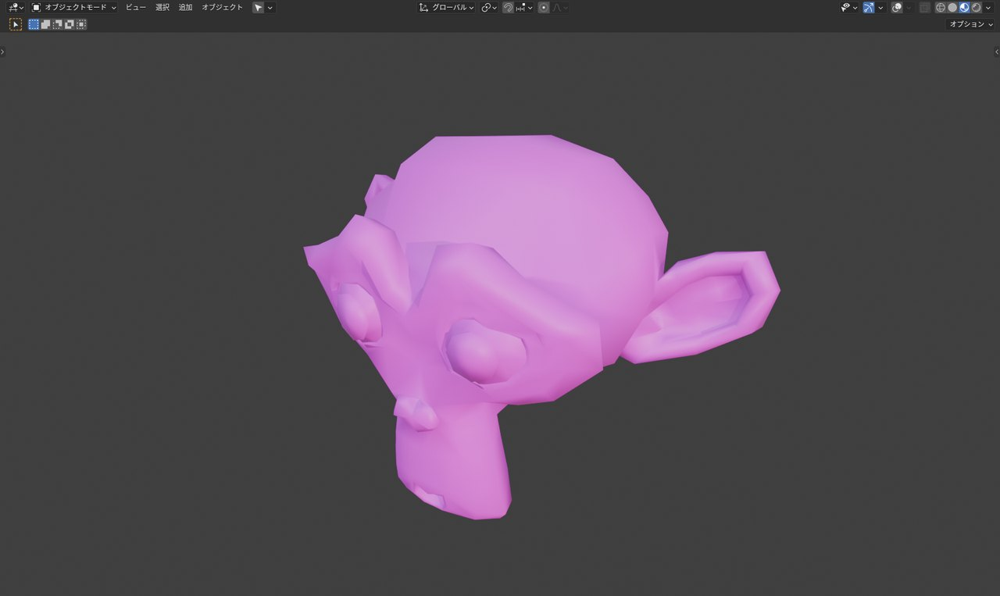
見どころ：切ったまま押した図はピンク色のままで、パスは変わっていません。入れて押すと、新しいフォルダーのファイルにつながり、マス目のテクスチャが写ります。
「ファイル パイプライン」のボタンで開く大きな画面です。上から順に、点検の結果とおすすめの操作、設定、機能のボタン、直前のレポートが並びます。画面が縦に長いので、この先の節で部分ごとに説明します。この節は、いちばん上の「コマンドセンター」です。
場所各カテゴリの「ファイル パイプライン」の見出しの中の、いちばん上のボタンで開きます。
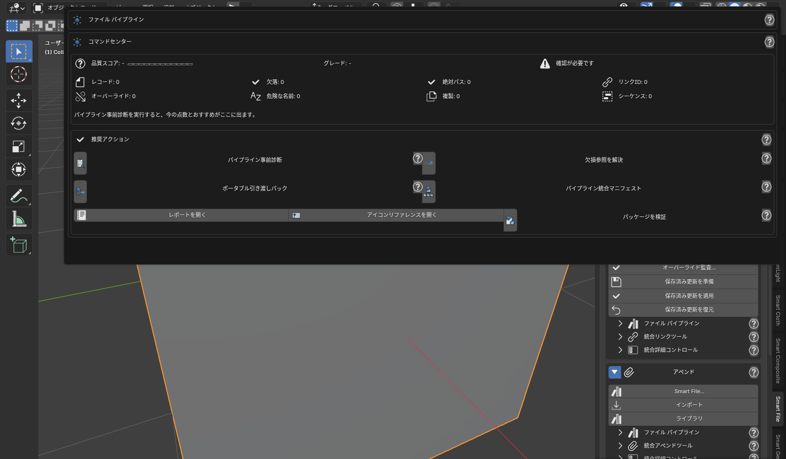
| 表示 | 働き |
|---|---|
| 品質スコア・グレード | 直前の「パイプライン事前診断」の点数と評価です。実行するまでは「-」と出ます。右に、人に渡せる状態かどうかが「確認が必要です」などと出ます。 |
| レコード・欠落・絶対パス・リンクID | 外部のファイルへの参照の数、見つからない物の数、絶対パスの数、リンクしたデータの数です。 |
| オーバーライド・危険な名前・複製・シーケンス | オーバーライドの問題の数、ファイル名に向かない名前の数、同じ名前の数、連番ファイルの数です。 |
| パイプライン事前診断 | 今のシーンを調べ、点数とおすすめの修復を作ります。結果はこの欄に出ます。 |
| 欠損参照を解決 | 見つからないファイルを検索ルートから探します。つなぎ直すのは「変更を適用」が入っている時だけです。 |
| ポータブル引き渡しパック | 診断・参照の一覧・ファイルの収集・検証を続けて行い、受け渡し用の一覧ファイルを書き出します。 |
| パイプライン統合マニフェスト | 参照・依存関係・点数などを 1 つにまとめた一覧ファイルを書き出します。 |
| レポートを開く | 直前の機能のレポートを、テキストとして開きます。 |
| アイコンリファレンスを開く | この画面のアイコンの一覧表の画像を読み込みます。 |
| パッケージを検証 | 最後に集めたパッケージの中身がそろっているかを確かめます。 |
機能のボタンがどう動くかを決める設定です。ここの「変更を適用」が効くのは、パスを変える機能（「欠損参照を解決」「再パス指定を適用」「パスを相対化」「バージョン計画を適用」「テクスチャ拡張子を置換」「パッケージを収集」のパスの書き戻し）と「リンクライブラリを編集」です。ほかの機能は、この切り替えに関係なく動きます。
場所「ファイル パイプライン」の画面の「コマンドセンター」の下です。
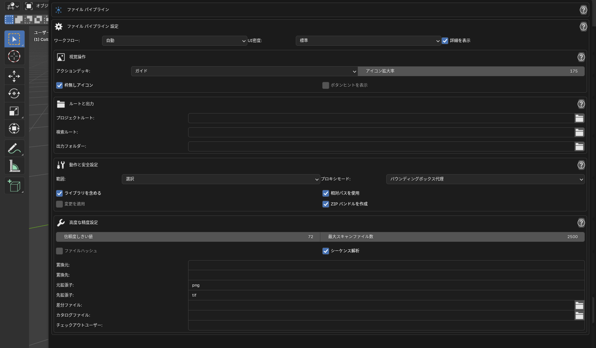
| 表示 | 働き |
|---|---|
| ワークフロー | 「自動」以外を選ぶと、その作業に関係する機能の見出しだけが並びます。「詳細を表示」が入っている時は全部並びます。 |
| UI密度 | 画面の詰め方を選びます。 |
| 詳細を表示 | 入れると、下に「高度な精度設定」の欄が出て、機能のボタンも全部並びます。最初は切れています。図は入れた状態です。切れている時は、「置換元」などの入力欄は出ません。 |
| アクションデッキ | 機能のボタンの並べ方を選びます。「ガイド」は見出しごとに並べます。 |
| アイコン拡大率 | ボタンの高さを変えます。 |
| 枠無しアイコン | ボタンの枠を描かない形にします。 |
| ボタンヒントを表示 | ボタンの名前の下に、1 行の説明を出します。 |
| プロジェクトルート | プロジェクトの基準のフォルダーです。 |
| 検索ルート | 見つからないファイルを探すフォルダーです。空のときはプロジェクトルートを探します。 |
| 出力フォルダー | レポートやパッケージの書き出し先です。 |
| 範囲 | 物を対象にする機能が何に働くかを選びます。「選択」「リンクのみ」「すべて」があります。 |
| プロキシモード | 「プロキシ表示」を押した時の、リンクした物の見せ方を選びます。 |
| ライブラリを含める | 一覧やパスの付け替えの対象に、リンクした .blend を含めます。 |
| 相対パスを使用 | パスを書き戻すとき、保存済みのファイルなら相対パスにします。 |
| 変更を適用 | 入れると、パスを変える機能（「欠損参照を解決」「再パス指定を適用」「パスを相対化」「バージョン計画を適用」「テクスチャ拡張子を置換」）がパスを実際に変え、「パッケージを収集」が集めた先へパスを書き換え、「リンクライブラリを編集」がリンク元を開きます。切っている時、パスは変わらず、リンク元も開きません。案や結果はレポートに出ます。「パッケージを収集」はファイルを写すところまで行います。「再パス指定を適用」「パスを相対化」「バージョン計画を適用」は、「変更を適用」が切れていると警告で知らせます。ほかの機能は知らせません。最初は切れています。 |
| ZIP バンドルを作成 | 「パッケージを収集」で、集めたファイルの ZIP も作ります。 |
| 信頼度しきい値 | 「欠損参照を解決」がつなぎ直す、候補の点数の下限です。 |
| 最大スキャンファイル数 | 探すときに調べるファイル数の上限です。 |
| ファイルハッシュ | 「詳細を表示」の時に出ます。入れると、ファイルの中身まで比べて重複などを調べます。遅くなります。 |
| シーケンス解析 | 「詳細を表示」の時に出ます。連番のファイルを 1 つのまとまりとして調べます。 |
| 置換元・置換先 | 「詳細を表示」の時に出ます。「再パス指定をプレビュー」「再パス指定を適用」で付け替える、パスの前の部分と、新しいフォルダーを入れます。 |
| 元拡張子・先拡張子 | 「詳細を表示」の時に出ます。「テクスチャ拡張子を置換」で変える前と後の拡張子を入れます。 |
| 差分ファイル | 「詳細を表示」の時に出ます。「差分を保存」などで使うファイルです。空なら標準の場所を使います。 |
| カタログファイル | 「詳細を表示」の時に出ます。「アセットカタログを構築」で作った一覧のファイルです。 |
| チェックアウトユーザー | 「詳細を表示」の時に出ます。ロックの記録に書く名前です。空なら OS のユーザー名を使います。 |
機能のボタンを見出しごとに並べた部分です。赤いボタンはデータを書き換える機能です。「詳細を表示」が切れている既定では、赤いボタンのうち「再パス指定を適用」「パスを相対化」だけが出て、残りは入れた時に出ます。図は入れた状態です。
場所「ファイル パイプライン」の画面の設定の下です。
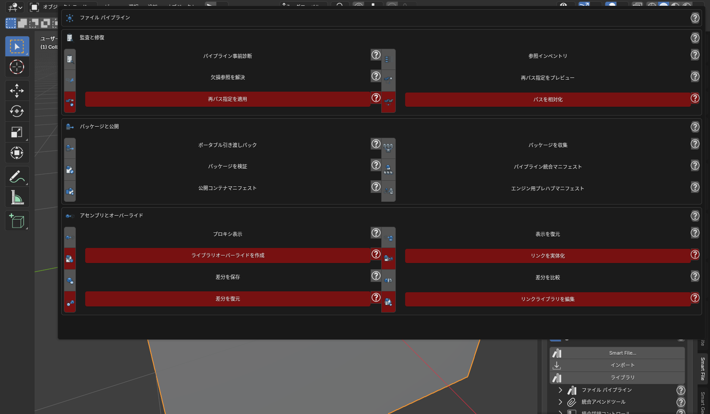
| 表示 | 働き |
|---|---|
| 監査と修復 | 「パイプライン事前診断」「参照インベントリ」「欠損参照を解決」「再パス指定をプレビュー」「再パス指定を適用」「パスを相対化」が並びます。働きは「ファイル パイプライン」の節と同じです。 |
| パッケージと公開 | 「ポータブル引き渡しパック」「パッケージを収集」「パッケージを検証」「パイプライン統合マニフェスト」「公開コンテナマニフェスト」「エンジン用プレハブマニフェスト」が並びます。 |
| プロキシ表示 | 「アセンブリとオーバーライド」の中です。リンクした物を、隠す・箱で出すなどの軽い表示にします。見せ方は「プロキシモード」で選びます。 |
| 表示を復元 | リンクした物の表示を元に戻します。 |
| ライブラリオーバーライドを作成・リンクを実体化 | 「詳細を表示」の時に出ます。働きは「ファイル パイプライン」の節と同じです。 |
| 差分を保存 | 位置・表示・マテリアルの割り当てなど、今のファイルで変えた内容を記録します。 |
| 差分を比較 | 今のシーンと、記録した差分を比べます。 |
| 差分を復元 | 「詳細を表示」の時に出ます。位置や表示を、記録した差分の状態へ戻します。 |
| リンクライブラリを編集 | 「詳細を表示」の時に出ます。「変更を適用」が入っている時は、選んだ物のリンク元の .blend を開きます。切れている時は、開く先を確かめるだけです。 |
機能のボタンの続きと、直前のレポートの欄です。図は「詳細を表示」を入れた状態です。
場所「ファイル パイプライン」の画面のいちばん下です。
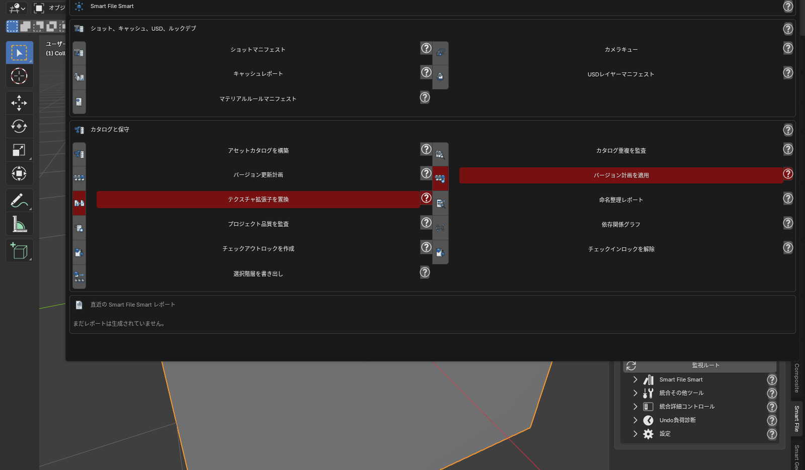
| 表示 | 働き |
|---|---|
| ショット、キャッシュ、USD、ルックデブ | 「ショットマニフェスト」「カメラキュー」「キャッシュレポート」「USDレイヤーマニフェスト」「マテリアルルールマニフェスト」が並びます。カメラ・キャッシュ・マテリアルの割り当てなどを、一覧ファイルやレポートにします。 |
| アセットカタログを構築 | プロジェクトのフォルダーを調べ、モデルやテクスチャの一覧を作ります。 |
| カタログ重複を監査 | 一覧と参照の中の重複を探します。 |
| バージョン更新計画 | v001 のような版の番号を調べ、新しい版への切り替え案を作ります。 |
| バージョン計画を適用 | 「詳細を表示」の時に出ます。「変更を適用」が入っている時、切り替え案を実行します。切れている時は、案をレポートに出すだけです。 |
| テクスチャ拡張子を置換 | 「詳細を表示」の時に出ます。働きは「ファイル パイプライン」の節と同じです。 |
| 命名整理レポート・プロジェクト品質を監査・依存関係グラフ | 名前の問題、プロジェクト全体の点検、ファイルどうしのつながりをレポートにします。 |
| チェックアウトロックを作成・チェックインロックを解除 | 編集中の印（ロック）の記録を作る・消します。 |
| 選択階層を書き出し | 選んだ階層を、ライブラリ用の新しい .blend に書き出します。 |
| 直近の ファイル パイプライン レポート | 直前に実行した機能の結果の要約が出ます。 |
SmartFile Suite に同梱した読み込み・書き出しなどの機能を、カテゴリごとに分けて並べる見出しです。見出しの名前はカテゴリによって「統合リンクツール」「統合アペンドツール」「統合インポートツール」「統合エクスポートツール」「統合プレビューツール」「統合その他ツール」になります。ボタン名の頭には、機能ごとの短い名前（3DS、DXF、STL、IKEA、テクスチャ、レポーター、アセットなど）が付きます。「履歴と復元」には出ません。
場所各カテゴリの「ファイル パイプライン」の下にある、折りたたみの見出しです。そのカテゴリに入る同梱の機能があるときだけ出ます。最初は閉じています。
| 表示 | 働き |
|---|---|
| 統合リンクツール | 「リンク」の中に出ます。「テクスチャ: 再リンク」「テクスチャ: 収集」「テクスチャ: 相対パス化」など、テクスチャのパスを付け替える・集める機能が並びます。 |
| 統合アペンドツール | 「アペンド」の中に出ます。「UMI: Blend を読み込み」など、ほかの .blend を取り込む機能が並びます。 |
| 統合インポートツール | 「インポート」の中に出ます。「3DS: インポート」「DXF: インポート」「STL: インポート（レガシー）」「IKEA: 製品をインポート」「UMI: すべて読み込み」など、ほかの形式を読み込む機能が並びます。 |
| 統合エクスポートツール | 「エクスポート」の中に出ます。「DXF: エクスポート」「STL: エクスポート（レガシー）」、フレームごとの頂点の動きを保存する「アニメーションメッシュを処理」、「レポーター: CSV を書き出し」などが並びます。 |
| 統合プレビューツール | 「プレビュー」の中に出ます。「レポーター: 一致する物を選択」「レポーター: 隔離表示」など、物の情報を調べて絞り込む機能が並びます。 |
| 統合その他ツール | 「その他」の中に出ます。「アセット: 名前を変更」「アセット: タグを追加」など複数のアセットをまとめて変える機能や、Decentraland 向けの準備の機能（頭に DCL と付くボタン）が並びます。 |
| 統合詳細コントロール | カテゴリのボタンだけでは足りないときに開く見出しです。「レポーター: 詳細コントロール」のようなボタンで、その機能の元のパネルや設定の画面を開けます。開いた画面の見出しは最初は閉じていて、押すと開きます。 |
実例カスタムプロパティの条件で物を絞り込んで表示する（スザンヌと立方体で試した様子）
「レポーター: 詳細コントロール」の画面では、カスタムプロパティの値などを条件にして物を選べます。「隔離表示」は、条件に合わない物を隠して、合う物だけを選びます。
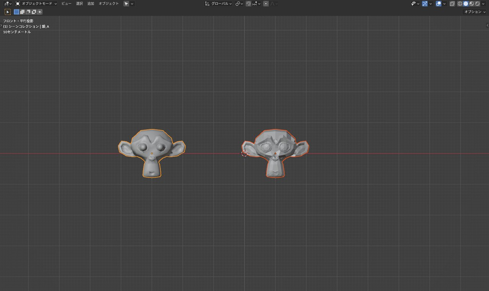
見どころ：前はスザンヌ 2 つと立方体 2 つが並んでいます。kind が hero の物だけが残り、立方体は 3D ビューから消えます。最後の図では全部が戻ります。
選んだソースの .blend から、編集できるデータとして今のシーンへ取り込む入口です。
場所「リンク」の下です。
| 表示 | 働き |
|---|---|
| Smart File... | ファイルを選ぶ画面を開き、別の .blend をソースに設定して、取り込み用の一覧を作り直します。 |
| インポート | いまのソースを調べ直し、取り込み用の一覧画面を最新の状態で開きます。 |
| ライブラリ | 登録したライブラリの中のファイルを調べ、選んだものだけを取り込む画面を開きます。 |
コンテナ（版ごとにまとめたデータ）、ショット、外部の形式などを読み込むための補助をまとめたカテゴリです。
場所「アペンド」の下です。
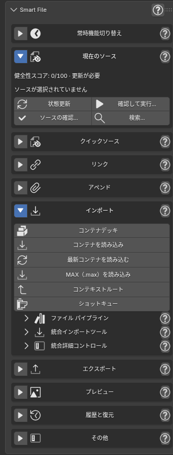
| 表示 | 働き |
|---|---|
| コンテナデッキ | コンテナと、その関連する版を確かめる画面を開きます。 |
| コンテナを読み込み | 指定したコンテナを今のシーンへ読み込みます。 |
| 最新コンテナを読み込む | 関連するコンテナのいちばん新しい版を読み込みます。 |
| MAX（.max）を読み込み | Autodesk MAX の読み込みを開きます。.max ファイルを選び、大きさ・画像の探し方・コレクションの作り方などを確かめてから実行します。 |
| コンテキストルート | プロジェクトの基準になるフォルダーや環境のパスを管理します。 |
| ショットキュー | ショット（カットごとの場面）のレンダリングの順番を作る・確かめる画面を開きます。 |
公開、パッケージ、バンドル、一覧ファイルの書き出しをまとめたカテゴリです。
場所「インポート」の下です。
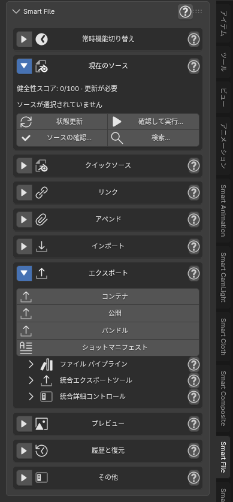
| 表示 | 働き |
|---|---|
| コンテナ | 今の作業を、版の番号の付いたコンテナとして公開します。 |
| 公開 | 選んだ内容を、プレビュー画像や情報を付けたアセットとして公開します。 |
| バンドル | 外部ファイルを 1 つのフォルダーに集めます。.blend の写しを入れることや、ZIP を作ることもできます。 |
| ショットマニフェスト | ショットの状態を受け渡すための一覧ファイルを書き出します。 |
変更を確定する前に、確認・監査・レビューをするためのカテゴリです。
場所「エクスポート」の下です。
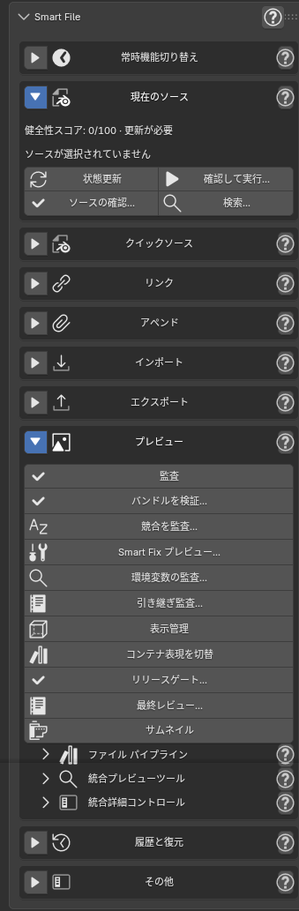
| 表示 | 働き |
|---|---|
| 監査 | 開いている .blend の画像・音・フォントなどの外部ファイルを調べ、見つからないファイルや絶対パスなどをまとめます。 |
| バンドルを検証... | 作ったバンドルを、人に渡す前に確かめます。 |
| 競合を監査... | バンドルや計画を適用する前に、ファイルのぶつかり合いがないかを調べます。 |
| Smart Fix プレビュー... | 自動の修正で何が変わるかを、実際に変える前に見ます。 |
| 環境変数の監査... | 環境変数に頼っているコンテキストルートを調べ、見つからない変数やフォルダーを示します。 |
| 引き継ぎ監査... | 今のシーンを人に渡せる状態かを点検します。 |
| 表示管理 | 軽い表示や別の表示（表現）に切り替える画面を開きます。 |
| コンテナ表現を切替 | 別の表現があるとき、コンテナの表現を入れ替えます。 |
| リリースゲート... | 最終の公開や受け渡しの前に、確認項目を見直します。 |
| 最終レビュー... | 最後の確認用の画面を開きます。 |
| サムネイル | プレビュー画像をまとめて作ります。 |
復元ポイント、自動保存、保存済みの計画など、安全のための機能をまとめたカテゴリです。開くと、下の折りたたみの見出しが並びます。
場所「プレビュー」の下です。
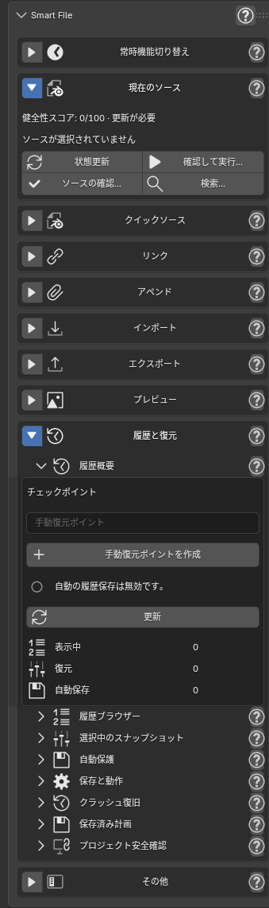
| 表示 | 働き |
|---|---|
| 履歴概要 | 最初から開いている見出しです。手動の復元ポイントを作ります。 |
| 履歴ブラウザー | 復元ポイントと自動保存の一覧です。 |
| 選択中のスナップショット | 一覧で選んだ行の詳しい情報です。 |
| 自動保護 | 定期の復元ポイントと自動保存の設定です。 |
| 保存と動作 | 履歴の保存先と、復元するときの安全の設定です。 |
| クラッシュ復旧 | 落ちた Blender の状態を取り出す機能です。 |
| 保存済み計画 | 保存したパスの付け替え計画の適用と復元です。 |
| プロジェクト安全確認 | プロジェクト単位の保護の道具です。 |
手動の復元ポイントを作るための中心の場所です。手動の復元ポイントが基本の戻り先で、自動保存はその間を守る保険です。
場所「履歴と復元」の中の最初の見出しです。最初から開いています。上の「履歴と復元」の図に写っています。
| 表示 | 働き |
|---|---|
| チェックポイント | 次に作る復元ポイントの名前を入れます。最初は空で、薄い字で「手動復元ポイント」と出ます。空のまま作るとこの名前になります。あとで選ぶときに分かりやすい名前を入れます。 |
| 手動復元ポイントを作成 | 今の状態を、入れた名前で復元ポイントとして保存します。大きな変更・読み込み・書き出しの前に使います。 |
| 更新 | 上の行に出る、自動の履歴保存が動いているかの表示を更新します。 |
| 表示中 | 一覧に出ている履歴の数です。 |
| 復元 | 復元ポイントの数です。 |
| 自動保存 | 自動保存の数です。 |
実例失敗した変更を、復元ポイントまで戻す（スザンヌで試した様子）
大きな変更の前に「手動復元ポイントを作成」を押しておくと、失敗しても「履歴ブラウザー」からその時の状態へ戻せます。
見どころ：途中の図では頭の上半分がありません。戻した後は、復元ポイントを作った時の形に戻ります。戻す時はファイル全体が保存した時の状態に入れ替わるので、その後に行った変更は残りません。戻した後に開いているのは履歴フォルダーの中のファイルです。
復元ポイントと自動保存の一覧です。新しいものが上に出ます。
場所「履歴と復元」の中の見出しです。最初は閉じています。
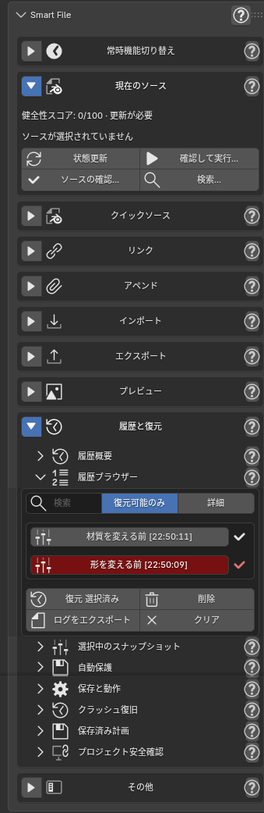
| 表示 | 働き |
|---|---|
| 検索欄 | 名前などの文字で一覧を絞り込みます。 |
| 復元可能のみ | 戻せる行だけを出します。 |
| 詳細 | 詳しい情報も出します。 |
| 復元 選択済み | 選んだ行の状態へ戻します。戻す前に確認の画面が出ます。その行に直接戻せるファイルがないときは、それより前のいちばん近い復元ポイントを使います。 |
| 削除 | 選んだ行を消します。その行のファイルもディスクから消すかを選べます。 |
| ログをエクスポート | 履歴の一覧をファイルに書き出します。 |
| クリア | 今のシーンの履歴の行をすべて消します。このアドオンが作った保存ファイルも消すかを選べます。 |
一覧で選んだ行の詳しい情報を、戻す前に確かめる場所です。
場所「履歴と復元」の中の見出しです。最初は閉じています。
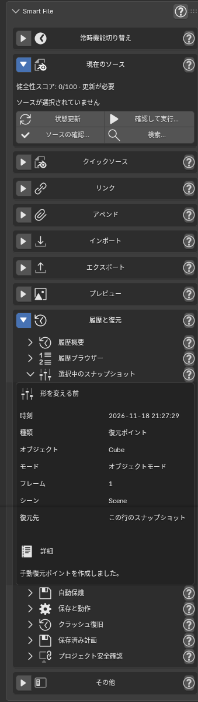
| 表示 | 働き |
|---|---|
| 時刻 | 保存した時刻です。 |
| 種類 | 復元ポイントか自動保存かを示します。 |
| オブジェクト | 保存したときにアクティブだったオブジェクトです。 |
| モード | 保存したときのモードです。 |
| フレーム | 保存したときのフレームです。 |
| シーン | 保存したときのシーンです。 |
| 復元先 | その行のファイルへ直接戻すときは「この行のスナップショット」、前の復元ポイントへ戻すときは「直前の復元ポイント」と出ます。 |
| 詳細 | その行を作った時の説明です。 |
定期の復元ポイントと世代管理自動保存を設定します。続けて守る必要があるときだけ有効にします。どちらも切っている間は自動では保存しません。
場所「履歴と復元」の中の見出しです。最初は閉じています。
| 表示 | 働き |
|---|---|
| 任意の定期復元を有効化 | 決まった間隔で復元ポイントを作ります。 |
| 間隔 | 作る間隔（分）です。定期復元と自動保存のそれぞれにあります。 |
| 最大ファイル数 | 残しておくファイルの数です。定期復元と自動保存のそれぞれにあります。 |
| 世代管理自動保存を有効化 | 自動保存を始めます。 |
| 最大ファイル数の対象 | 最大ファイル数をどの範囲で数えるかを選びます。 |
| 未変更の自動保存をスキップ | 前の自動保存から何も変えていないときは、新しく保存しません。 |
| 自動保存を今すぐ作成 | その場で自動保存を 1 つ作ります。 |
履歴ファイルの保存先と、復元するときの安全の動作を決めます。
場所「履歴と復元」の中の見出しです。最初は閉じています。
| 表示 | 働き |
|---|---|
| 手動保存フォルダー | 履歴の保存先のフォルダーです。空のままにすると、SmartFile Suite の標準の保存場所を使います。 |
| 履歴フォルダーを登録 | 入れたフォルダーを保存先として登録します。フォルダーが無ければ作ります。 |
| プロジェクト保存フォルダーを開く | 履歴を保存しているフォルダーを開きます。 |
| 既定フォルダーを使用 | 保存先を標準の場所に戻します。 |
| 現在のプロジェクト保存先 | いま使っている保存先が出ます。 |
| 復元安全設定 | 「復元の前に安全用のスナップショットを作成」「スナップショットのファイルを圧縮」「バックグラウンド確認間隔（秒）」を決めます。 |
| プリファレンスを保存 | SmartFile Suite の設定を書き込んだうえで、Blender のプリファレンスも保存します。 |
ほかの Blender が落ちたとき、その状態を新しいファイルとして取り出し、確認のあとで開きます。落ちた Blender や元のファイルは変えません。
場所「履歴と復元」の中の見出しです。最初は閉じています。
| 表示 | 働き |
|---|---|
| ステータス・進行 | 今の状態と、実行中の処理の進み具合です。 |
| 対象を更新 | 落ちたと判断できるほかの Blender を探します。今使っている Blender や、正常に動いている Blender は対象になりません。 |
| 保存済み復旧ポイント | ディスクに残っている自動保存やバックアップのファイルなど、復旧の候補を探します。 |
| キャンセル | 実行中の処理を止めます。 |
| クリア | 候補の一覧を消します。 |
| 出力フォルダー | 取り出したファイルの保存先です。 |
| 最新の状態を復元 | 選んだ候補を新しい .blend に書き出し、確認のあとで開きます。 |
| メモリの復元ポイントを探す | 選んだ候補から、戻せる時点を探します。 |
| このポイントを復旧 | 見つかった時点の 1 つを取り出します。 |
保存しておいたパスの付け替え計画を、このカテゴリから離れずに適用・復元します。
場所「履歴と復元」の中の見出しです。最初は閉じています。
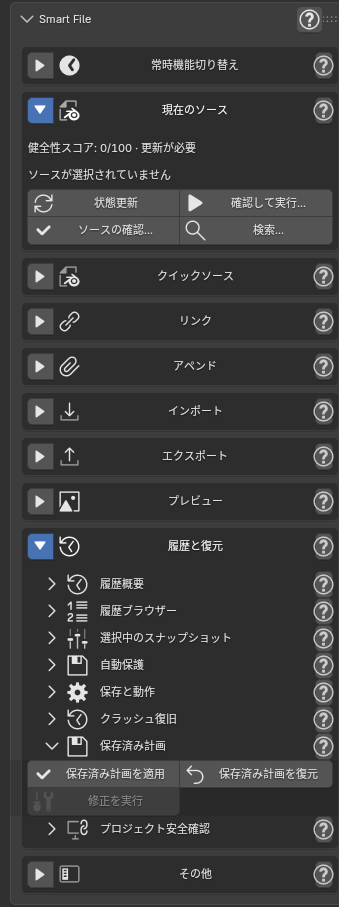
| 表示 | 働き |
|---|---|
| 保存済み計画を適用 | 最後に保存したパスの付け替え計画を、もう一度適用します。 |
| 保存済み計画を復元 | 最後に保存した計画で記録したパスへ戻します。そのあと別に変えた所は戻しません。 |
| 修正を実行 | よくあるパスやソースの問題を、安全な範囲でまとめて直します。ソースかライブラリの基準フォルダーが無いときは押せません。 |
プロジェクト全体の保護や、ショットの状態を扱う道具を開きます。
場所「履歴と復元」の中の最後の見出しです。最初は閉じています。
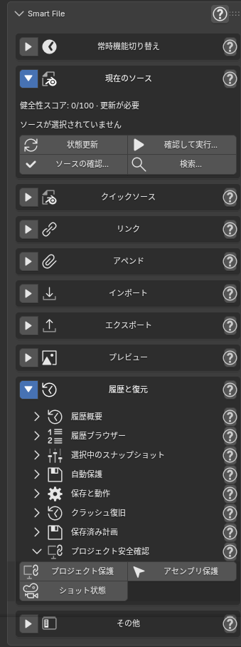
| 表示 | 働き |
|---|---|
| プロジェクト保護 | ロック（ほかの人が同時に編集しないための印）や、共同作業の安全のための画面を開きます。 |
| アセンブリ保護 | 大きな統合や公開の前に、組み立て全体の安全を確かめます。 |
| ショット状態 | ショットの状態を保存・復元・比較します。 |
どのカテゴリにも当てはまらない補助の機能と、Undo の診断、設定をまとめたカテゴリです。
場所7 つのカテゴリのいちばん下です。
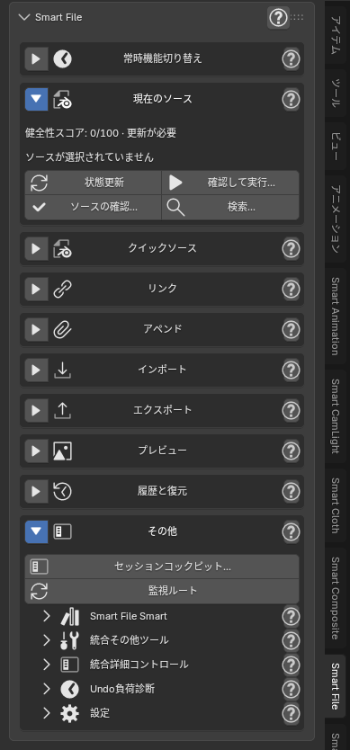
| 表示 | 働き |
|---|---|
| セッションコックピット... | 今の作業の状態、最近の操作、次に使うとよい機能を 1 つの画面で見ます。 |
| 監視ルート | 見張るプロジェクトのフォルダーを確かめる・整える画面を開きます。 |
Undo（元に戻す）にかかる時間を測り、重さにかかわるデータの量を記録します。Undo そのものを速くする機能ではありません。
場所「その他」の中の折りたたみの見出しです。最初は閉じています。
| 表示 | 働き |
|---|---|
| Undo速度を計測 | 元に戻す・やり直すの時間を 3 回測り、平均を出します。オブジェクトを選び、オブジェクトモードのときだけ押せます。どこかに 3D ビューを開いておき、アニメーションの再生やレンダリングは止めておきます。 |
| 孤立データを整理 | どこからも使われていないデータを、確認の画面のあとで消します。 |
| Undo時間の平均 | 計測のあとに出ます。プッシュ・元に戻す・やり直すの平均の秒数と、計測回数です。 |
| スナップショット重量要因 | 計測のあとに出ます。オブジェクト・メッシュ・画像などの数、パック画像サイズ、孤立データの数、頂点数上位5オブジェクトです。 |
| 直前の孤立データ整理 | 整理のあとに出ます。整理の前と後のデータの数と、消した数です。 |
実例どこからも使われていないデータを片付ける（スザンヌで試した様子）
「孤立データを整理」は、どこからも使われていないメッシュやマテリアルなどを、確認の画面のあとでまとめて消します。
見どころ：アウトライナーの「孤立データ」の表示で、前は「マテリアル」と「メッシュ」の項目があり、それぞれのアイコンの横に使われていない数の 4 が出ています。後はその 2 つの項目が消えています。消したデータは戻せないので、先にファイルを保存してから使います。
よく使う SmartFile Suite の設定を並べた見出しです。
場所「その他」の中の最後の折りたたみの見出しです。最初は閉じています。
| 表示 | 働き |
|---|---|
| ランチャーの幅 | SmartFile Suite の開始画面の小窓を開くときの幅です。 |
| ホーム密度 | ホーム系の小窓で、読みやすさ（「標準」）と情報の量（「高密度」）のどちらを優先するかを選びます。 |
| 最近の項目の最大数 | 「最近のソース」に残すファイルの数です。 |
| 作業ログの上限 | この Blender を開いている間に残しておく、最近の SmartFile Suite の操作の数です。 |
| 詳細設定... | すべての設定を開きます。必要なときだけ使います。 |
| プリファレンスを保存 | SmartFile Suite の設定を書き込んだうえで、Blender のプリファレンスも保存します。 |
ほかのファイルにある物を、今のシーンで編集できる形で取り込みます。
結果：選んだデータが今のシーンに入ります。次からは「最近のソース」や「お気に入りソース」からすぐ選べます。
失敗しても、変更前の状態へ戻せるようにします。
結果：選んだ時点の状態に戻ります。
フォルダーを移したあとなどに、見つからなくなったリンクを直します。
結果：リンクが正しいファイルにつながり直します。
テクスチャなどを 1 か所に集め、人に渡せる形にします。
結果：外部ファイルが 1 つのフォルダーにまとまります。
フォルダーを移してピンク色になったテクスチャを、移した先のファイルにつなぎ直します。
結果：確かな候補があるファイルだけがつなぎ直され、3D ビューのピンク色が元のテクスチャに戻ります。
アドオンが出ない・日本語にならない、など全部のアドオンに共通のことは、全体仕様書の「困った時」を見てください。
| アドオン | SmartFile Suite（smart_file_suite） |
|---|---|
| 版 | 1.0.0 |
| ZIP | SmartFileSuite_1.0.0.zip |
| 大きさ | 4,875,654 バイト |
| SHA256 | 5cd3498af437d7431ec5f9c455eea9792fb4dedfa21e17e746974535f6826399 |
SmartFile Suite 解説書 v1.0.0 ／ 2026-11-18 作成